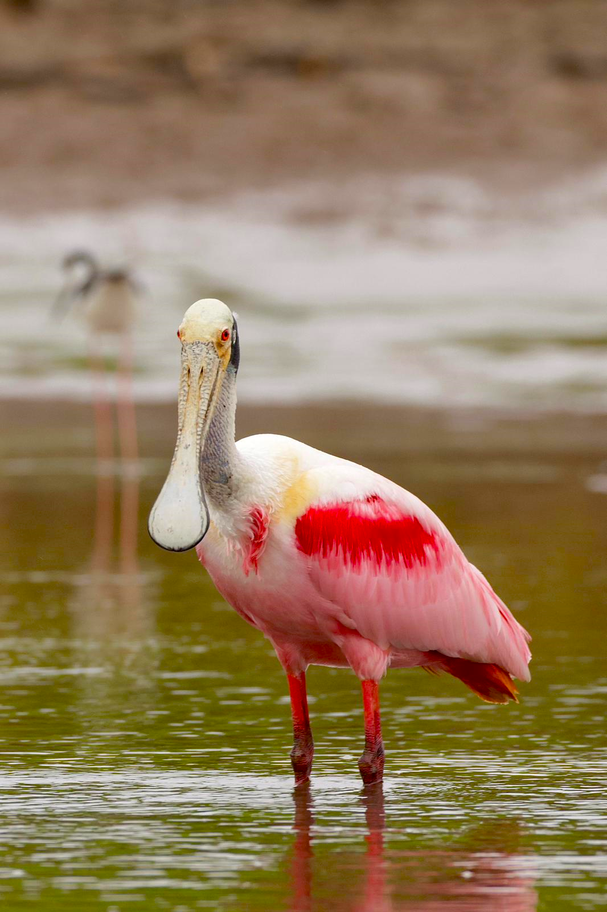

Caño Negro 01 : Espátula Rosada / Roseate Spoonbill / (Platalea ajaja)
En el corazón del Refugio de Vida Silvestre Mixto Caño Negro, entre la exuberante vegetación y los serpenteantes ríos, una Espátula Rosada se posa majestuosa en una orilla de la laguna. Su plumaje rosado resplandece bajo los cálidos rayos del sol, mientras su distintiva espátula se sumerge con gracia en busca de pequeños crustáceos y peces. Este elegante ave, símbolo de la vida silvestre migratoria, encarna la belleza y la vitalidad de este ecosistema único. En cada vuelo y cada banquete, la Espátula Rosada nos recuerda la importancia de preservar este santuario natural, donde la fauna y la flora coexisten en armonía bajo el cuidado del los lugareños de Caño Negro y EcoExploreCR.
Caño Negro 02 : Mariposa Hojarasca de Una Mancha / One-spotted Prepona / (Archaeoprepona Demophon)
En el exuberante paisaje del Refugio de Vida Silvestre Mixto Caño Negro, una Mariposa Hojarasca de Una Mancha, conocida científicamente como Archaeoprepona demophon, despliega sus alas con gracia sobre una frondosa vegetación. Su presencia agrega un destello de color a la riqueza natural de este Refugio de Vida Silvestre Mixto. Con su singular belleza, la mariposa hojarasca se convierte en una embajadora del delicado equilibrio entre los animales y su entorno. Bajo el cálido resplandor del sol, se alimenta de néctar, contribuyendo a la polinización y al ciclo vital de las plantas de la región. Su vuelo, tan etéreo como efímero, es una danza que celebra la diversidad de fauna y flora que habita entre los árboles que bordean los ríos y lagunas de este paraíso natural, un lugar que EcoExploreCR se enorgullece de conservar y compartir con los amantes de la naturaleza.

Caño Negro 03 : Caimán de Anteojos / Spectacled Caiman / (Caiman Crocodilus)
En el corazón del Refugio de Vida Silvestre Mixto Caño Negro, durante la época seca, el Caimán de Anteojos emerge como un verdadero titán de la vida silvestre. En las orillas de los ríos y lagunas, este imponente reptil defiende ferozmente su territorio de otros machos, desafiando con sus poderosas mandíbulas y su mirada penetrante. Entre los matorrales y árboles que bordean el agua, acecha silenciosamente, esperando el momento oportuno para cazar. Con movimientos ágiles y sigilosos, se desliza bajo la superficie, cazando peces, mamíferos y aves desprevenidas. Su presencia en este ecosistema no solo es una demostración de su fuerza y astucia, sino también un recordatorio de la intrincada red de vida que se entrelaza en esta región, un tesoro natural que EcoExploreCR se esfuerza por proteger y preservar para las generaciones futuras.

Caño Negro 04 : Martín Pescador Amazónico / Amazon Kingfisher / (Chloroceryle amazona)
En el corazón del Refugio de Vida Silvestre Mixto Caño Negro, el Martín Pescador Amazónico despliega su esplendor entre la densa vegetación . Con su plumaje brillante y su pico afilado, se posa en una rama sobre las tranquilas aguas del Río Frío. Su mirada aguda escudriña el paisaje, buscando el movimiento sutil de los peces que se deslizan bajo la superficie. Con un salto ágil, se sumerge en el río, emitiendo un chirrido característico al atrapar su presa con destreza. Este magnífico cazador representa la exuberante vida que florece en este ecosistema único, donde cada ser vivo encuentra su lugar en la danza eterna de la naturaleza. EcoExploreCR celebra y protege este santuario natural, compartiendo la maravilla del Martín Pescador Amazónico y su hogar con el mundo.
Caño Negro 05 : Gavilán Gris Joven / Grey Hawk Juvenile / (Buteo plagiatus)
En los vastos dominios del Refugio de Vida Silvestre Mixto Caño Negro, un joven Gavilán Gris se alza en la cima de un árbol centenario. Su plumaje moteado de cafés y blancos aún revela su juventud mientras observa con atención el movimiento en el dosel del bosque. Con ojos penetrantes y agudos, escudriña entre las ramas en busca de su próxima presa. En un destello de velocidad y precisión, se lanza desde su percha, cortando el aire con gracia mientras persigue a su objetivo. En este paisaje donde convergen los ríos, la laguna y la exuberante vegetación, el Gavilán Gris joven encuentra un hogar y un refugio, formando parte de la rica red de vida que EcoExploreCR se esfuerza por preservar y promover.
Caño Negro 06 : Garza Tigre Juvenil / Bare-throated Tiger Heron Juvenile / (Tigrisoma mexicanum)
Una joven Garza Tigre, con su plumaje moteado y su garganta al descubierto, se alza sobre la hierba alta para acechar a su presa. Su presencia añade un toque de misterio y elegancia a la densa vegetación que lo rodea. Mientras el sol se filtra entre la hierba alta, emite su particular llamado, un sonido que resuena a lo largo de los humedales, como un eco del pasado que invita a la contemplación de ese fuerte rugido. Se alimentan de ranas, serpientes, reptiles y peces.

Caño Negro 07 : Garza Pico de Bote / Boat-billed Heron / (Cochlearius cochlearius)
En el tranquilo entorno del Refugio de Vida Silvestre Mixto Caño Negro, la Garza Pico de Bote, con su singular pico en forma de bote , se convierte en la guardiana de la noche. Mientras el sol se oculta y la oscuridad envuelve el paisaje, esta majestuosa ave despliega sus alas para adentrarse en la penumbra. Con ojos agudos y adaptados a la vida nocturna, se desliza entre los manglares y las orillas de los ríos, cazando silenciosamente bajo la luz de la luna. Su presencia en este ecosistema es un recordatorio de la importancia de conservar estos espacios naturales, donde incluso en la noche más oscura, la vida silvestre sigue floreciendo en toda su belleza. ¡EcoExploreCR te invita a este maravilloso espectáculo de la naturaleza!
Caño Negro 08 : Poponé / Russet-Naped Wood Rail / (Aramides albiventris)
Poponé, también conocido como Russet-Naped Wood Rail, de plumaje marrón y blanco, deambula con gracia por el suelo cubierto de hojas caídas. Su presencia es un recordatorio de la sorprendente facilidad con la que estas aves pueden adaptarse a la presencia humana, compartiendo el hábitat con la misma familiaridad que una gallina en un patio trasero. Con curiosidad, se acerca a los visitantes de EcoExploreCR, ofreciendo un vistazo cercano a la vida silvestre que florece en este santuario natural. Su capacidad para domesticarse resalta la armonía entre humanos y naturaleza, una relación preciosa que se nutre en este mágico rincón del mundo.
Caño Negro 09 : Basilisco Esmerala / Jesus Christ Lizard / (Basiliscus plumifrons)
Basilisco Esmeralda se alza sobre las raíces de los árboles a la orilla de los cuerpos de agua. Con su brillante piel verde esmeralda y su característica cresta en la cabeza, este reptil se prepara para su asombrosa hazaña: correr sobre el agua. Con agilidad y gracia, se lanza desde la orilla y, con cada paso, desafía la gravedad, creando pequeños remolinos a su paso. Este espectáculo de destreza es un recordatorio vívido de la maravilla y la adaptabilidad de la vida silvestre en este entorno único. En un santuario donde la naturaleza se despliega en toda su gloria, el Basilisco Esmeralda es un símbolo de la belleza y la magia que se encuentra en cada rincón con EcoExploreCR.
Caño Negro 10 : Tangara Azuleja / Blue-gray Tanager / (Thraupis episcopus)
Tangara Azuleja despliega sus alas de azul intenso. Con su plumaje resplandeciente bajo los rayos del sol. Con su llamativo plumaje azul-grisáceo y su distintiva máscara facial oscura, esta especie es fácilmente reconocible entre la densa vegetación que bordea los ríos y lagunas de la zona. Entre la densa vegetación, se alimenta de frutas maduras y insectos, también desempeña un papel crucial en la dispersión de semillas, contribuyendo así a la regeneración de la flora local.
Caño Negro 11 : Cormorán Neotropical / Neotropical Cormorant / (Nannopterum brasilianum)
En el Refugio de Vida Silvestre Mixto Caño Negro, donde la naturaleza se despliega en su máxima expresión, un Cormorán Neotropical reposa majestuoso sobre una rama al borde del Río Frío. Su iris celeste resplandece bajo los rayos del sol, un testimonio vivo de la diversidad que habita este santuario ecológico. Mientras observa el ir y venir de los ríos y la danza de los peces en el agua, se prepara para su próxima cacería. Con elegancia, se lanza al vuelo, deslizándose sobre la superficie del agua en busca de su sustento. Su presencia es solo un pequeño reflejo de la asombrosa fauna y flora que prospera en este rincón de la tierra, una joya natural que EcoExploreCR se enorgullece de proteger y compartir con el mundo.